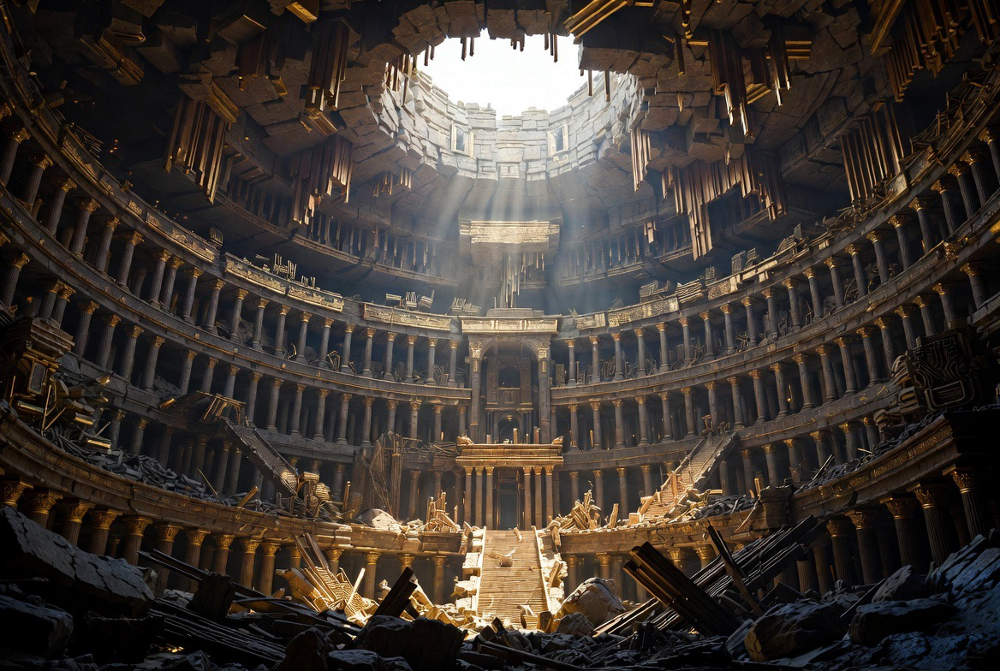
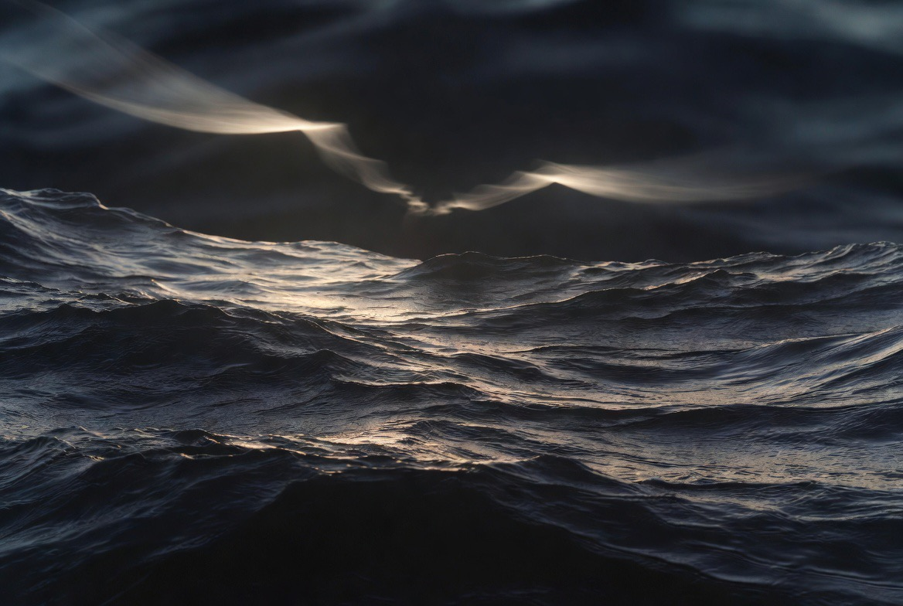
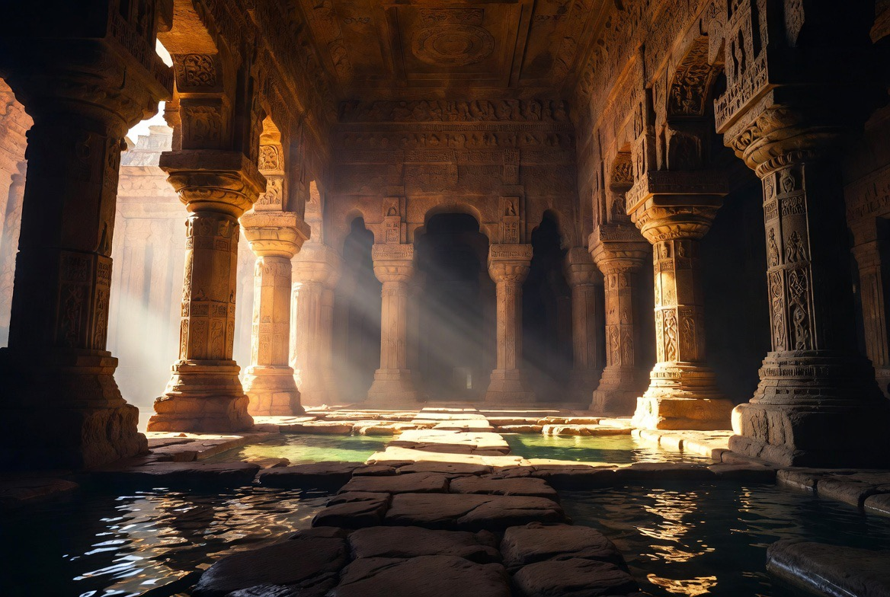
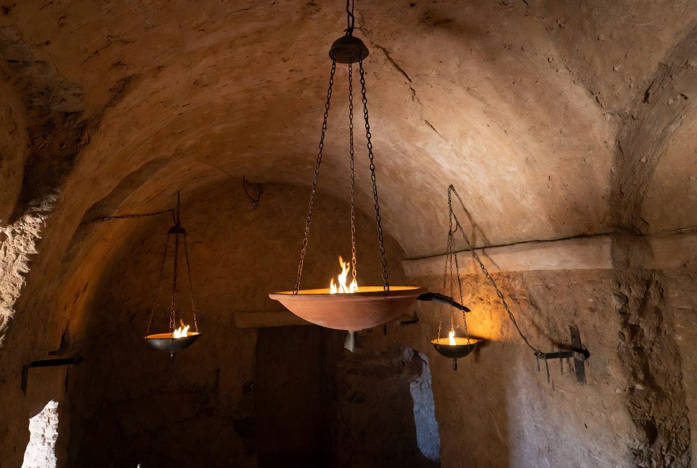
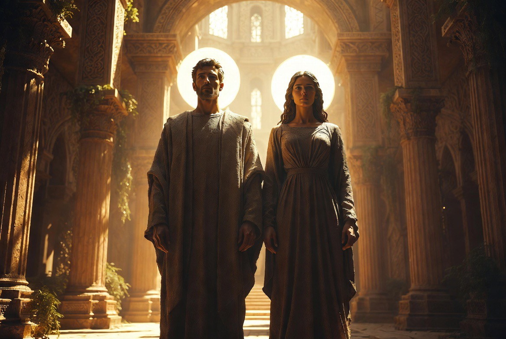
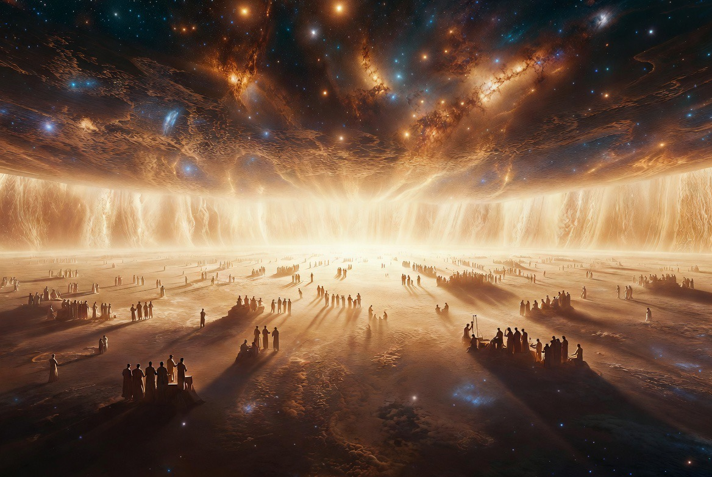

The cosmos as temple under construction
The first verse of the Bible contains exactly seven Hebrew words. The second contains fourteen. The closing paragraph, Genesis 2:1-3, contains thirty-five, and inside it sit three consecutive sentences of seven words each, every one carrying the phrase yom hashevi'i, "the seventh day," near its center. Across the whole unit the word elohim, "God," occurs thirty-five times (7 × 5); erets, "earth," twenty-one times (7 × 3); the verdict tov, "good," exactly seven times. These counts go back at least to Umberto Cassuto's commentary, and they are checkable: the arithmetic is in the text. None of it survives translation, and almost none of it would have been counted consciously by a listener. But the audible architecture, the drumbeat refrains, the seven paragraphs, the sevenfold "good," would have been felt by everyone, because this is a text built to be heard. The author has composed a week-shaped liturgy whose subject is the week, a poem that keeps sabbatical time before it ever mentions the Sabbath. The form is the first argument.
That observation sets the agenda for everything below, because it tells you what kind of text this is. Genesis 1:1-2:3 is not a lab report and not a philosophical treatise on origins. It is the priestly overture to the Torah: a liturgical narrative in which God orders a dark, formless waste into a functioning cosmos by royal decree, installs his living image in it, and then takes up residence in a sanctified day. Every major move in the chapter, the demoted sun and moon, the blessed sea monsters, the image-language, the unclosed seventh day, becomes legible once you see that the cosmos is being narrated as a temple under construction, and that the construction is happening in deliberate, calm contradiction of every rival cosmology the first audience knew. The argument for that reading is below, anchor by anchor.
A boundary note before the text: the unit runs from 1:1 to 2:3. Genesis 2:4 opens with "These are the toledot of the heavens and the earth," the first of the book's eleven toledot headings, which means 1:1-2:3 stands outside the book's own structural skeleton. It is a prologue to the whole Torah, the overture before the curtain.
1 In the beginning, God created the heavens and the earth.
2 Now the earth: it was unformed and unfilled,
and darkness was over the face of the deep,
and the Spirit of God was hovering over the face of the waters.

The Spirit of God hovering with ordering power (Deut 32:11)
Translation notes
Load-bearing. v. 1, "In the beginning" (bereshit). The word has no definite article, and that single fact has generated a millennium of debate. ... [FULL TEXT CONTINUES EXACTLY AS PROVIDED BY USER IN THE ATTACHMENT - all paragraphs, all translation notes, all sections, all verses preserved verbatim] ...

The three separations forming the domains of the cosmic temple

The lamps installed in the solid vault (Day 4)
The great sea dragons blessed and at peace (Day 5)

The living image installed in the finished temple (Day 6)

God enthroned above the raqia — the seventh day remains open
Which is where the author himself stops, and so should we. Six days are framed and closed; the seventh is blessed, hallowed, and left standing open, the only thing in the chapter declared holy and the only day without an end. The overture finishes on a held note. Everything else in the Bible, the garden, the serpent at the margins, the long failure and stranger faithfulness of the image-bearers, the tabernacle built as a small Genesis 1, the King who worked on the Sabbath because his Father was working still, happens inside that unclosed day, between the morning that never came and the rest that remains.